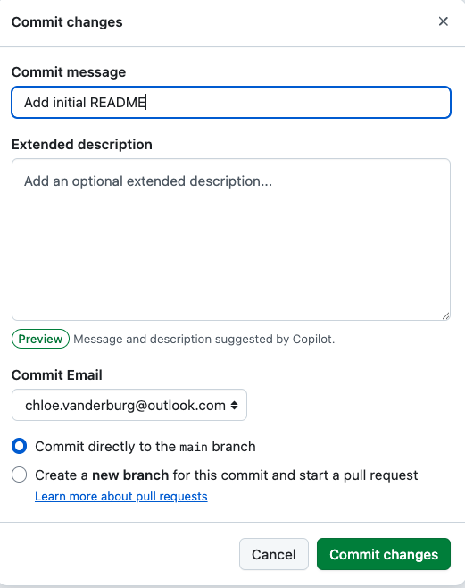
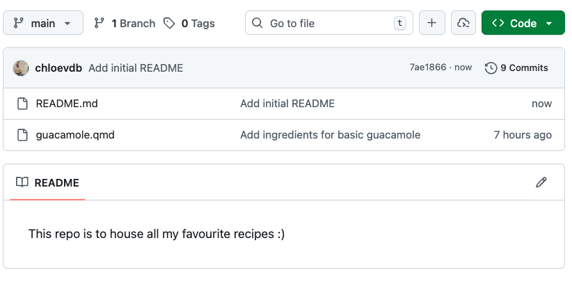

Branches, pulling and merging
git pull origin mainwill download changes on the server to your local directory- We can make new branches to work on major issues, then merge these into our main branch
Pulling repositories from the server to our local computer
Pulling takes changes made on a remote repository and brings them down into your local repository. For example, say you are collaborating on a project and your partner has made some changes and pushed them up to the github repo. You now want to pull down all those changes and keep working on the project locally.
Let’s have a go at this.
1. Add a README file
Go to the recipes repository page on github. You will see an option to add a “README” file.

Click “Add a README” and add some info, e.g.:
This repo is to house all my favourite recipes :)By adding this file directly on the GitHub server, we have simulated the same scenario as if someone had pushed this file to the repo instead.
Click commit changes:
Then you will be prompted to add a commit message. Add something sensible such as “Add initial README” and click commit changes.

You will then see your new file in your recipes repo with the new commit message:

2. Pull changes down
Back on your local command line, navigate to your recipes directory:
cd ~/Desktop/recipesNow run the following to pull changes to your local computer:
git pull origin mainAnd you’ll see an output like this:
From github.com:username/recipes
* branch main -> FETCH_HEAD
Updating 1fecf68..7ae1866
Fast-forward
README.md | 2 ++
1 file changed, 2 insertions(+)
create mode 100644 README.mdRun ls to see the files in your directory and confirm we now have the README file locally.
How does pull work?
git pull does not blindly overwrite uncommitted local changes. When we pull everything from the server, the most common scenario is the “fast-forward”, such as we have done here. Git checks if you have changes that haven’t been committed yet. If you do, Git will try to merge the changes from the server with your local changes. If there’s a conflict (for example, if you and someone else changed the same line in a file), Git will stop and ask you to resolve the conflict before continuing. In the most common case (when you haven’t made any local changes or your local changes are already committed) Git can just add the new changes from the server on top of your work. This is called a “fast-forward” update, and it’s what happened in our example. Our local directory now matches the content in the Github server. There are different scenarios if your local file is behind and if there are merge conflicts. In this workshop, we will not cover how to deal with conflicts; you can read more about it here and more on recovering files and exploring history here.
Branches
So far, we have been working on one branch, called main. We can add more branches to our tree, make any changes we wish safely without affecting the main branch and when we are ready we can ‘Compare and pull’ these changes into the main branch. Generally, we want to make brnaches to work on when we are doing bug fixes of our code or testing out major restructuring or styling and we don’t want these to be pushed to the main branch just yet.
Let’s practise making a new branch.
Back in RStudio, type the following into terminal to see what branch you are currently on:
git branchAs we have been working on one branch, main, you should see this output:
* mainNow we can make a new branch and switch to it. You can name it anything you like, but its best to pick something that describes what you are doing with that branch. You may even want to name it after the ‘Issue’ you are addressing – more on ‘Issues’ in the next episode!
git checkout -b test-new-recipeSwitched to a new branch 'test-new-recipe'git checkout do?
If you run git checkout branch-name, it switches your working directory to the specified existing branch.
If you run git checkout -b branch-name, it creates and switches your working directory to the specified branch.
If you run git checkout file.txt, it restores that file to its last committed state (discarding changes).
If you run git checkout with no arguments, it will show you which files have been modified since the last commit.
Now run git branch again:
main
* test-new-recipeAnd you can see we are now on a new branch, indicated with an asterisk. We haven’t pushed our changes yet to the GitHub server, so you won’t see the branch there yet. Let’s make some modifications, then push those up to the server.
Open your guacamole recipe with nano and make a new change to the recipe.
nano guacamole.qmdI’m going to edit mine to add lime juice, you can do any change you like :)
# Guacamole recipe
## Ingredients
- Avocado
- Coriander
- Red onion
- Lemon juice
- Lime juice
- Salt
## Instructions
1. Mash the avocado
2. Finely chop the coriander and red onion
3. Add salt,lemon and lime juice to taste
4. Enjoy!Now, add, commit and push your new changes:
git add guacamole.qmd
git statusOn branch test-new-recipe
Changes to be committed:
(use "git restore --staged <file>..." to unstage)
modified: guacamole.qmdgit commit -m "recipe updates"
git push origin test-new-recipeEnumerating objects: 5, done.
Counting objects: 100% (5/5), done.
Delta compression using up to 8 threads
Compressing objects: 100% (3/3), done.
Writing objects: 100% (3/3), 338 bytes | 338.00 KiB/s, done.
Total 3 (delta 1), reused 0 (delta 0), pack-reused 0
remote: Resolving deltas: 100% (1/1), completed with 1 local object.
remote:
remote: Create a pull request for 'test-new-recipe' on GitHub by visiting:
remote: https://github.com/username/recipes/pull/new/test-new-recipe
remote:
To github.com:username/recipes.git
* [new branch] test-new-recipe -> test-new-recipeMerging into our main branch
You may notice in the output it says:
remote: Create a pull request for 'test-new-recipe'We can now review this pull request in github. You’ll see a button “Compare & pull request”
This is GitHub asking if we want to ‘pull’ our new branch into our main branch. Click the button.
You can now see what changes were made in the file, and are given the option to ‘Create pull request’. The title will default to the commit message you used and you can add further description if you like. Click ‘Create pull request’.
The pull request is now made, but our new branch has not been merged into main yet, it is waiting for us to merge it. There are different kinds of merges, but today we will do the default merge.
Optionally add a comment, or otherwise click ‘Merge pull request’ to merge your test-new-recipe branch into main. GitHub will give you a default commit message, which you can leave as is. Click ‘Confirm merge’.
It’s good practice to ‘trim your tree’ and remove branches that you no longer need. You can click through to branches and safely delete the test-new-recipe branch.
Have a look back at your main repo now. You’ll see the commit message has updated to the most recent one you used when you committed the changes to guacamole.qmd on the new branch.
By default, other people cannot make branches directly on your repository, unless you have added them as collaborators. You can assign roles to collaborators to control if they are able to push directly onto main, or if you want to personally approve all pull requests. Other people can however fork your public repository (making a copy on their own account) and submit a pull request back to your original repository, which you can then decide to merge or not. You can switch your repository to private in settings – note that you cannot turn private repositories into a website via GitHub pages.
Merge conflicts
In this workshop we will not be covering how to deal with merge conflicts i.e., when the remote repository has changes that have not been incorporated into the local repository. Git will reject the push/pull if it detects merge conflicts, and you may then need to tell Git how to resolve these. The Carpentries lesson has a section on how to deal with Conflicts.